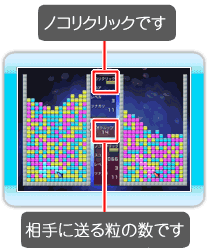

16 |
BATTLE GAME A |
 |

基本ルールはSINGLEのGAME Aと同じです。 お互いのノコリクリックがなくなると粒が上から降ってきます。 ノコリクリックは時間経過でも減ります。また、粒を多く繋げて消してもノコリクリック数は増えません。 SINGLEのGAME Aには無い対戦専用の特殊粒 （※1）が出現します。 ※１について 『対戦用特殊粒』 シェイク Wiiリモコンを振ると積もっている粒をシェイクしてかき混ぜられます。 タテ持ちの場合はボタンとボタンを押しながらWiiリモコンを振ります。 自分が消した色粒と同じ色粒を対戦相手からも消します。 対戦相手が粒を消している時に使うと、対戦相手は効果を得ることが出来ません。 グレースケール 相手の粒を一定時間白黒にして判別しづらくします。 シールド 対戦相手からの攻撃を一定時間防ぎます。 また、相手から攻撃されたグレースケール、マスキングの効果を解除します。 マスキング 相手の画面を一定時間見づらくします。 特殊粒は自分のステージに粒としてストックして任意のタイミングで発動することが出来ます。 |
 |
 |
 |